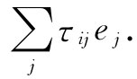

我们应当指出，从第1卷第20章后我们就已经应用过二阶张量了。在那里，我们曾用下式定义过“平面上的转矩”，诸如τxy ：
τxy =xFy -yFx .
推广到三维的情况，可以写成
τij =ri Fj -rj Fi . （31.22）
τij 这个量就是一个二阶张量。为了看清楚这个张量就是这样的形式，一种办法就是通过把τij 同某个矢量相结合，比方说按照下式同单位矢量相结合，

如果这个量是一矢量 ，则τij 必然会像张量那样变换，这是我们关于张量的定义。把有关τij 的式子代入，便得
由于那些点积都是标量，所以右边两项都是矢量，因而它们之差也是矢量。因此τij 就是一个张量。
但τij 是一种特殊类型的张量，它是反对称 的，即
τij =-τji ，
所以它只有三个不等于零的项——τxy ，τyz 和τzx 。在第1卷第20章中我们已能够证明，这三项几乎是由于“偶然”才会像矢量的三个分量那样变换，以致我们可以定义 ：
τ=（τx ，τy ，τz ）=（τyz ，τzx ，τxy ）.
我们所以说“偶然”，是因为它只发生于三维中。例如，在四维中，一个二阶的反对称张量就多达六个不等于零的项，因而肯定不能由具有四个 分量的矢量来代替它。
正如轴矢量τ=r×F实际上是一个张量那样，所以每个由两个极矢量构成的叉积也是张量——与上述相同的一切论证也都适用。可是，出自幸运，它们也可用矢量（实际上是一种膺矢）来表达，因而数学就给我们带来了方便。
从数学方面讲，若a和b是任意两个矢量，则那九个量ai bj 会形成一个张量（尽管它可能没有任何有用的物理目的）。这样，对于位置矢量r来说，ri rj 就是一个张量，而由于δij 也是一个张量，我们便明白式（31.20）的右边确是一个张量。同样，式（31.22）也是一个张量，因为其右边的两项都是张量。